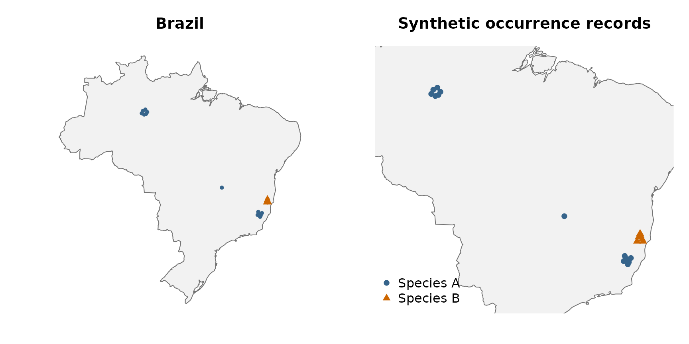
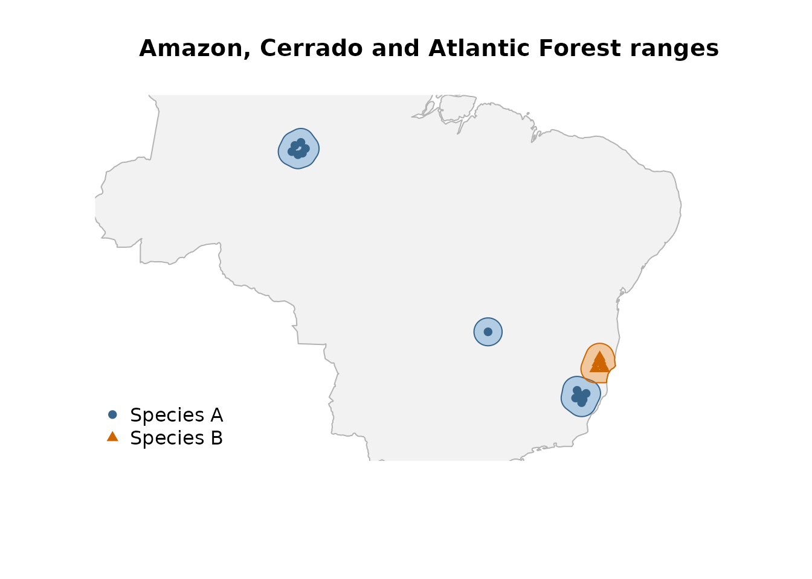
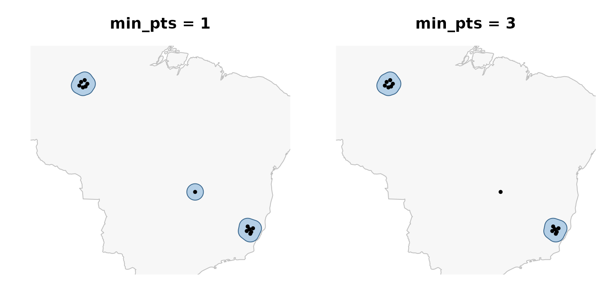
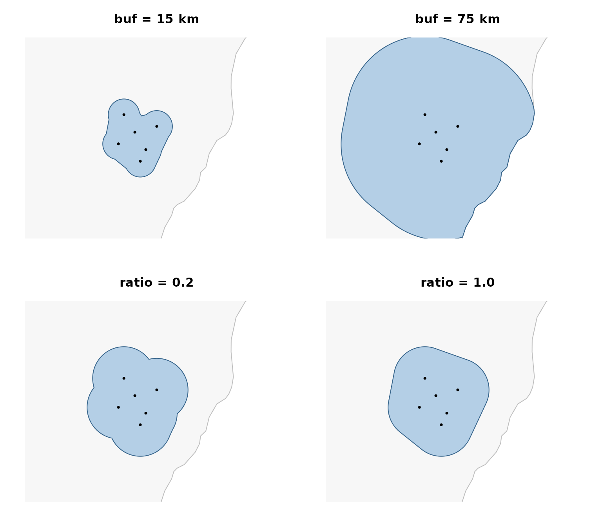
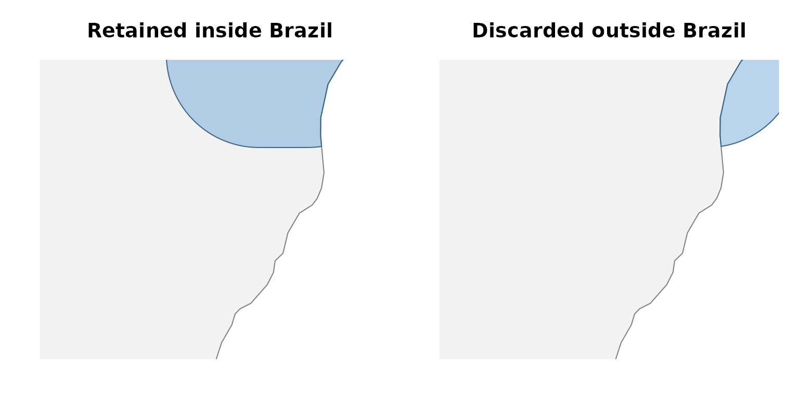
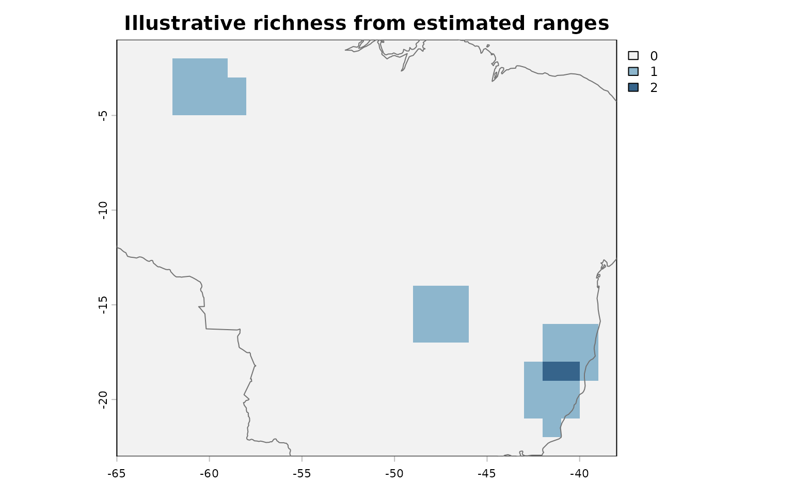
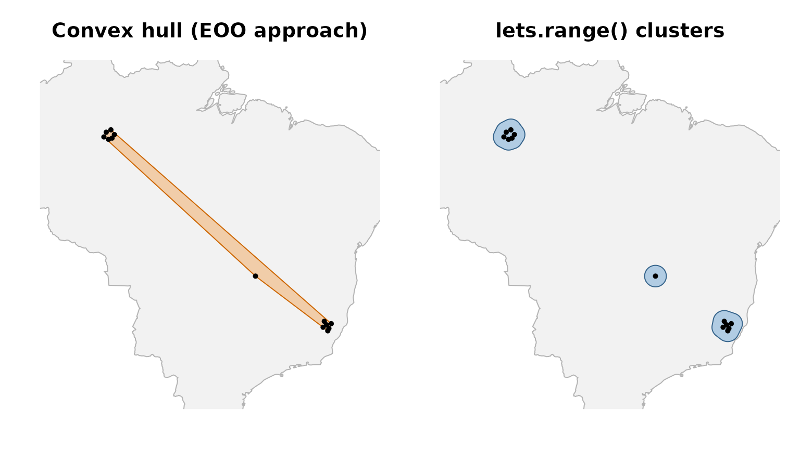

Estimating species geographic ranges with lets.range()
Bruno Vilela
Source:vignettes/lets-range.Rmd
lets-range.RmdOverview
lets.range() converts species occurrence records into
estimated geographic range polygons. It was designed for macroecological
workflows in which occurrence data, rather than expert-drawn range maps,
are the primary source of spatial information. The function combines
geographic clustering, buffered concave hulls, and a user-supplied
spatial mask.
For each species, lets.range():
- Validates records, rounds coordinates, removes duplicates, and optionally subsamples occurrences.
- Calculates pairwise geodesic distances and groups records using DBSCAN.
- Constructs a buffered concave hull independently for each retained cluster.
- Intersects the resulting polygons with a spatial mask, or removes the portions that overlap the mask.
- Returns an
sfobject with oneMULTIPOLYGONfeature per surviving species-by-cluster combination.
The estimated polygons should be interpreted as spatial approximations of occurrence-supported ranges, not as species distribution models or confirmed areas of occupancy. Their geometry depends on sampling density, clustering, buffer distance, hull concavity, and the chosen mask.
The function requires sf (version 1.0-11 or later),
dbscan, and a version of sf linked against
GEOS 3.11.0 or later. The examples use letsR,
sf, and a Brazilian land boundary obtained with
rnaturalearth. We use the 1:50-million-scale Natural Earth
country dataset, available through the rnaturalearthdata
package, so no external map files or API credentials are needed. The
records themselves are synthetic, not observations of real species.
Prepare reproducible occurrence records
We create two hypothetical terrestrial species with contrasting spatial configurations across Brazil. Species A has a group of records in the Amazon, another in the Atlantic Forest, and a single isolated record in the Cerrado. Species B occurs only in the Atlantic Forest, partly overlapping species A. These regions provide an illustrative biogeographic setting, not verified records or ecological niches of real taxa.
Each occurrence must have scientificName,
decimalLongitude, and decimalLatitude columns
in WGS84 decimal degrees. The additional region column
below is used only for annotation and is ignored by
lets.range().
library(letsR)
#> Loading required package: terra
#> terra 1.9.50
library(sf)
#> Linking to GEOS 3.14.1, GDAL 3.12.2, PROJ 9.7.1; sf_use_s2() is TRUE
occs <- rbind(
# Species A: an Amazonian cluster (inland Amazonas)
data.frame(
scientificName = "Example_species_A",
decimalLongitude = c(-60.4, -60.0, -59.7, -60.6, -60.2, -59.9),
decimalLatitude = c(-3.4, -3.2, -3.6, -3.8, -4.0, -3.9),
region = "Amazon"
),
# Species A: a second cluster in the Atlantic Forest (inland Espirito Santo)
data.frame(
scientificName = "Example_species_A",
decimalLongitude = c(-41.7, -41.5, -41.3, -41.8, -41.4, -41.1),
decimalLatitude = c(-19.3, -19.6, -19.9, -19.8, -20.1, -19.5),
region = "Atlantic Forest"
),
# Species A: one geographically isolated Cerrado record
data.frame(
scientificName = "Example_species_A",
decimalLongitude = -47.6,
decimalLatitude = -15.5,
region = "Cerrado"
),
# Species B: records exclusively in the Atlantic Forest
data.frame(
scientificName = "Example_species_B",
decimalLongitude = c(-40.35, -40.0, -39.9, -40.2, -40.5, -40.15),
decimalLatitude = c(-17.5, -17.7, -17.9, -17.15, -17.9, -17.35),
region = "Atlantic Forest"
)
)
table(occs$scientificName, occs$region)
#>
#> Amazon Atlantic Forest Cerrado
#> Example_species_A 6 6 1
#> Example_species_B 0 6 0A spatial mask is mandatory. We use the outline of Brazil from the
1:50-million-scale Natural Earth country dataset, accessible via
rnaturalearth and rnaturalearthdata. Note that
national borders are arbitrary limits for many biological ranges (this
is just a simple example).
study_area <- rnaturalearth::ne_countries(
country = "Brazil",
scale = "medium",
returnclass = "sf"
)
study_area <- study_area["admin"]
occ_points <- st_as_sf(
occs, coords = c("decimalLongitude", "decimalLatitude"), crs = 4326
)
inside_brazil <- lengths(st_within(occ_points, study_area)) > 0L
stopifnot(all(inside_brazil))
# A national view and a closer view of the three example regions.
regional_xlim <- c(-65, -38)
regional_ylim <- c(-23, -1)
atlantic_xlim <- c(-42.7, -39.5)
atlantic_ylim <- c(-21.3, -18.1)
op <- par(mfrow = c(1, 2), mar = c(2, 2, 3, 1))
plot(st_geometry(study_area), col = "gray95", border = "gray45",
main = "Brazil")
points(occs$decimalLongitude, occs$decimalLatitude,
pch = ifelse(occs$scientificName == "Example_species_A", 16, 17),
col = ifelse(occs$scientificName == "Example_species_A",
"steelblue4", "darkorange3"), cex = 0.7)
plot(st_geometry(study_area), xlim = regional_xlim, ylim = regional_ylim,
col = "gray95", border = "gray45",
main = "Synthetic occurrence records")
points(occs$decimalLongitude, occs$decimalLatitude,
pch = ifelse(occs$scientificName == "Example_species_A", 16, 17),
col = ifelse(occs$scientificName == "Example_species_A",
"steelblue4", "darkorange3"))
legend("bottomleft", legend = c("Species A", "Species B"),
pch = c(16, 17), col = c("steelblue4", "darkorange3"), bty = "n")
par(op)Estimate geographic ranges
The main arguments are occs, crop_shp,
eps_m, min_pts, ratio, and
buf. Distances are specified in meters, not degrees. The
plot_map = FALSE option suppresses the function’s automatic
species-by-species plots so that we can customize figures in the
vignette.
ranges <- lets.range(
occs = occs,
crop_shp = study_area,
eps_m = 95000, # 95 km neighborhood threshold for DBSCAN
min_pts = 1, # Retain even isolated occurrences
ratio = 0.5, # Intermediate concavity
buf = 50000, # 50 km buffer, applied before and after hull construction
intersection = TRUE, # Retain only the area inside study_area
plot_map = FALSE
)
ranges[, c("binomial", "cluster")]
#> Simple feature collection with 4 features and 2 fields
#> Geometry type: MULTIPOLYGON
#> Dimension: XY
#> Bounding box: xmin: -61.50014 ymin: -21.0031 xmax: -39.154 ymax: -2.295806
#> Geodetic CRS: WGS 84
#> binomial cluster geometry
#> 1 Example_species_A 1 MULTIPOLYGON (((-61.09126 -...
#> 2 Example_species_A 2 MULTIPOLYGON (((-42.42808 -...
#> 3 Example_species_A 3 MULTIPOLYGON (((-48.31453 -...
#> 4 Example_species_B 1 MULTIPOLYGON (((-40.92025 -...
st_geometry_type(ranges)
#> [1] MULTIPOLYGON MULTIPOLYGON MULTIPOLYGON MULTIPOLYGON
#> 18 Levels: GEOMETRY POINT LINESTRING POLYGON MULTIPOINT ... TRIANGLE
st_crs(ranges)$epsg
#> [1] 4326With min_pts = 1, the Cerrado singleton can form its own
cluster and, provided buf > 0, yield a polygon. Cluster
labels are identifiers assigned by DBSCAN within each species, not
globally unique IDs across species. Each retained cluster occupies one
row, even if its geometry has multiple spatially disconnected
components.
plot(st_geometry(study_area), xlim = regional_xlim, ylim = regional_ylim,
col = "gray95", border = "gray70",
main = "Amazon, Cerrado and Atlantic Forest ranges")
plot(st_geometry(ranges[ranges$binomial == "Example_species_A", ]),
col = grDevices::adjustcolor("steelblue3", alpha.f = 0.4),
border = "steelblue4", add = TRUE)
plot(st_geometry(ranges[ranges$binomial == "Example_species_B", ]),
col = grDevices::adjustcolor("darkorange2", alpha.f = 0.35),
border = "darkorange3", add = TRUE)
points(occs$decimalLongitude, occs$decimalLatitude,
pch = ifelse(occs$scientificName == "Example_species_A", 16, 17),
col = ifelse(occs$scientificName == "Example_species_A",
"steelblue4", "darkorange3"))
legend("bottomleft", legend = c("Species A", "Species B"),
pch = c(16, 17), col = c("steelblue4", "darkorange3"), bty = "n")
How clustering changes the result
DBSCAN identifies groups of geographically connected records. The
parameter eps_m is the neighborhood distance threshold. It
is not a maximum distance between every pair of records in the
same cluster, because a cluster can contain a chain of connected
neighborhoods.
The parameter min_pts specifies the minimum local
neighborhood size (including the focal record) required to form a core
point. Records classified as noise (DBSCAN label 0) are
excluded from the range estimate. For synthetic species A, increasing
min_pts from 1 to 3 excludes the isolated Cerrado record
while retaining its Amazonian and Atlantic Forest clusters.
occ_A <- subset(occs, scientificName == "Example_species_A")
with_singletons <- lets.range(
occ_A, crop_shp = study_area,
eps_m = 95000, min_pts = 1,
buf = 50000, ratio = 0.5,
plot_map = FALSE
)
without_singletons <- lets.range(
occ_A, crop_shp = study_area,
eps_m = 95000, min_pts = 3,
buf = 50000, ratio = 0.5,
plot_map = FALSE
)
c(
clusters_with_singletons = nrow(with_singletons),
clusters_without_singletons = nrow(without_singletons)
)
#> clusters_with_singletons clusters_without_singletons
#> 3 2
op <- par(mfrow = c(1, 2), mar = c(2, 2, 3, 1))
for (i in seq_along(list(with_singletons, without_singletons))) {
x <- list(with_singletons, without_singletons)[[i]]
plot(st_geometry(study_area), xlim = regional_xlim, ylim = regional_ylim,
col = "gray97", border = "gray75",
main = if (i == 1) "min_pts = 1" else "min_pts = 3")
if (nrow(x)) {
plot(st_geometry(x), add = TRUE,
col = grDevices::adjustcolor("steelblue3", alpha.f = 0.4),
border = "steelblue4")
}
points(occ_A$decimalLongitude, occ_A$decimalLatitude, pch = 16, cex = 0.7)
}
par(op)Use min_pts > 1 when an isolated record should not
define a range polygon on its own. The spatial separation among the
Amazon, Cerrado, and Atlantic Forest records makes the singleton
particularly clear in this example. Choosing eps_m and
min_pts requires biological judgement and should ideally be
tested in a sensitivity analysis.
How buffer width and hull concavity change the result
The buf parameter controls the width of the initial
buffer around each cluster and a second buffer around the hull.
For an isolated point, this creates a roughly circular polygon of radius
approximately 2 * buf before masking. Increasing
buf generally expands estimated ranges.
The ratio parameter controls the concavity of the hull,
with ratio = 1 producing a convex hull and smaller values
permitting a more concave boundary. Because the hull is built around
buffered points, changes in ratio may be subtle for small
or tightly clustered samples.
small_buffer <- lets.range(
occ_A, crop_shp = study_area,
eps_m = 95000, min_pts = 3,
ratio = 0.5, buf = 15000, plot_map = FALSE
)
large_buffer <- lets.range(
occ_A, crop_shp = study_area,
eps_m = 95000, min_pts = 3,
ratio = 0.5, buf = 75000, plot_map = FALSE
)
concave_range <- lets.range(
occ_A, crop_shp = study_area,
eps_m = 95000, min_pts = 3,
ratio = 0.2, buf = 30000, plot_map = FALSE
)
convex_range <- lets.range(
occ_A, crop_shp = study_area,
eps_m = 95000, min_pts = 3,
ratio = 1, buf = 30000, plot_map = FALSE
)The panels below zoom into the Atlantic Forest cluster so the effects of buffer distance and hull concavity are easier to see. The same parameters are applied to all retained clusters, including the Amazonian one.
options_to_plot <- list(small_buffer, large_buffer,
concave_range, convex_range)
plot_titles <- c("buf = 15 km", "buf = 75 km",
"ratio = 0.2", "ratio = 1.0")
op <- par(mfrow = c(2, 2), mar = c(2, 2, 3, 1))
for (i in seq_along(options_to_plot)) {
plot(st_geometry(study_area), xlim = atlantic_xlim, ylim = atlantic_ylim,
col = "gray97", border = "gray75",
main = plot_titles[i])
plot(st_geometry(options_to_plot[[i]]), add = TRUE,
col = grDevices::adjustcolor("steelblue3", alpha.f = 0.4),
border = "steelblue4")
points(occ_A$decimalLongitude, occ_A$decimalLatitude, pch = 16, cex = 0.6)
}
par(op)Restrict ranges to Brazilian land
crop_shp accepts an sf or sfc
object with a known coordinate reference system. With
intersection = TRUE, lets.range() retains only
parts of the estimated polygons inside the mask. With
intersection = FALSE, it retains only parts
outside the mask. The latter option is useful, for example, for
excluding land from the estimated ranges of marine species. Here, all of
our synthetic occurrence records are terrestrial and fall on Brazilian
land.
The example below illustrates how the same Brazilian mask partitions an estimated range into the part inside Brazil and the part discarded outside Brazil. Any discarded fragment should be interpreted as a geometric artifact of the buffer and hull, not evidence that a terrestrial species occupies the ocean.
occ_B <- subset(occs, scientificName == "Example_species_B")
inside_land <- lets.range(
occ_B, crop_shp = study_area,
intersection = TRUE,
eps_m = 95000, min_pts = 1, ratio = 0.5,
buf = 60000, plot_map = FALSE
)
outside_land <- lets.range(
occ_B, crop_shp = study_area,
intersection = FALSE,
eps_m = 95000, min_pts = 1, ratio = 0.5,
buf = 60000, plot_map = FALSE
)
op <- par(mfrow = c(1, 2), mar = c(2, 2, 3, 1))
for (i in 1:2) {
plot(st_geometry(study_area), xlim = atlantic_xlim, ylim = atlantic_ylim,
col = "gray95", border = "gray50",
main = if (i == 1) "Retained inside Brazil" else "Discarded outside Brazil")
x <- if (i == 1) inside_land else outside_land
if (nrow(x) > 0L) {
plot(st_geometry(x), add = TRUE,
col = grDevices::adjustcolor("steelblue3", alpha.f = 0.4),
border = "steelblue4")
}
points(occ_B$decimalLongitude, occ_B$decimalLatitude,
pch = 17, cex = 0.7, col = "darkorange3")
}
par(op)The country boundary removes estimated area in neighboring countries as well as the ocean. For a wide-ranging terrestrial species, a global land mask or a biologically motivated geographic domain may therefore be preferable.
Work with the output: from multiple ranges to a presence-absence matrix
lets.range() returns an sf object with
binomial, cluster, and geometry
columns in EPSG:4326. Each cluster is a MULTIPOLYGON
feature. Thus, species A contributes several polygon rows, whereas
species B contributes one. We can summarize cluster areas, combine
polygons belonging to the same species, and use the result directly in a
letsR presence-absence workflow.
ranges$area_km2 <- as.numeric(st_area(ranges)) / 1e6
ranges_summary <- st_drop_geometry(ranges)[,
c("binomial", "cluster", "area_km2")
]
print(ranges_summary)
#> binomial cluster area_km2
#> 1 Example_species_A 1 64953.66
#> 2 Example_species_A 2 60358.55
#> 3 Example_species_A 3 31517.17
#> 4 Example_species_B 1 51880.66
# Combine all retained clusters of each species into a single geometry.
species_ranges <- do.call(
rbind,
lapply(split(ranges, ranges$binomial), function(x) {
st_sf(
binomial = x$binomial[1],
geometry = st_union(st_geometry(x))
)
})
)
# There should now be one feature per species.
stopifnot(nrow(species_ranges) == length(unique(occs$scientificName)))
species_ranges
#> Simple feature collection with 2 features and 1 field
#> Geometry type: GEOMETRY
#> Dimension: XY
#> Bounding box: xmin: -61.50014 ymin: -21.0031 xmax: -39.154 ymax: -2.295806
#> Geodetic CRS: WGS 84
#> binomial geometry
#> Example_species_A Example_species_A MULTIPOLYGON (((-48.32991 -...
#> Example_species_B Example_species_B POLYGON ((-40.93575 -16.589...The resulting species_ranges object contains two species
and can be passed to lets.presab() to construct a
grid-based presence-absence matrix. A cell is assigned a presence when
it intersects an estimated range polygon (the default
cover = 0 convention). We use a one-degree grid for a
simple macroecological illustration, not as a recommended resolution for
local occupancy studies.
pam <- lets.presab(
shapes = species_ranges,
xmn = -65, xmx = -38,
ymn = -23, ymx = -1,
resol = 1,
remove.cells = TRUE,
remove.sp = TRUE,
cover = 0
)
# Matrix: cell centroids followed by one 0/1 column per species.
head(pam$Presence_and_Absence_Matrix)
#> Longitude(x) Latitude(y) Example_species_A Example_species_B
#> [1,] -61.5 -2.5 1 0
#> [2,] -60.5 -2.5 1 0
#> [3,] -59.5 -2.5 1 0
#> [4,] -61.5 -3.5 1 0
#> [5,] -60.5 -3.5 1 0
#> [6,] -59.5 -3.5 1 0
# Frequency of cells containing one or two species.
cell_richness <- rowSums(
pam$Presence_and_Absence_Matrix[, -(1:2), drop = FALSE]
)
print(table(cell_richness))
#> cell_richness
#> 1 2
#> 35 2
# Spatial richness is stored as a terra raster.
terra::plot(pam$Richness_Raster,
col = c("gray95", "lightskyblue3", "steelblue4"),
main = "Illustrative richness from estimated ranges")
plot(st_geometry(study_area), border = "gray45", col = NA, add = TRUE)
Species richness and co-occurrence in this grid reflect the inferred polygons, not independent field observations. The overlap between species A and B in the Atlantic Forest should produce cells with estimated richness of two. Changing clustering, buffering, or resolution can change those cells.
IUCN extent of occurrence and lets.range(): different
purposes
IUCN Red List assessments commonly use extent of occurrence (EOO) to characterize the spatial spread of a taxon’s current occurrences. The standard geometric estimator is a minimum convex polygon (MCP) that encloses all relevant known, inferred, or projected occurrence sites, with specific rules and exceptions under IUCN guidance. The MCP can span extensive unoccupied areas between disjunct populations. This is intentional: EOO is a measure of geographic spread relevant to assessing extinction risk, not a map of continuous occupancy.
An IUCN distribution or range map is not simply the
same thing as an EOO polygon. Depending on the taxon and available
information, IUCN maps may incorporate expert interpretation, habitat,
barriers, seasonality, and other information. Our comparison focuses
specifically on the geometric MCP approach to illustrating EOO versus
the clustered polygons produced by lets.range().
occ_A_sf <- st_as_sf(
occ_A,
coords = c("decimalLongitude", "decimalLatitude"),
crs = 4326
)
# An illustrative equal-area projection covering the Brazilian example.
brazil_equal_area <- paste(
"+proj=aea +lat_1=-5 +lat_2=-25 +lat_0=-15",
"+lon_0=-48 +datum=WGS84 +units=m +no_defs"
)
projected_points <- st_transform(occ_A_sf, brazil_equal_area)
eoo_hull <- st_convex_hull(st_union(st_geometry(projected_points)))
eoo_km2 <- as.numeric(st_area(eoo_hull)) / 1e6
# lets.range() retains disconnected clusters after the Brazil land mask.
range_area_km2 <- as.numeric(st_area(st_union(st_geometry(with_singletons)))) / 1e6
comparison <- data.frame(
estimate = c("Illustrative MCP-based EOO", "lets.range() polygon area"),
area_km2 = round(c(eoo_km2, range_area_km2))
)
print(comparison)
#> estimate area_km2
#> 1 Illustrative MCP-based EOO 252555
#> 2 lets.range() polygon area 156829
op <- par(mfrow = c(1, 2), mar = c(2, 2, 3, 1))
plot(st_geometry(study_area), xlim = regional_xlim, ylim = regional_ylim,
col = "gray95", border = "gray70", main = "Convex hull (EOO approach)")
plot(st_transform(eoo_hull, 4326), add = TRUE,
col = grDevices::adjustcolor("darkorange2", alpha.f = 0.3),
border = "darkorange3")
points(occ_A$decimalLongitude, occ_A$decimalLatitude, pch = 16, cex = 0.7)
plot(st_geometry(study_area), xlim = regional_xlim, ylim = regional_ylim,
col = "gray95", border = "gray70", main = "lets.range() clusters")
plot(st_geometry(with_singletons), add = TRUE,
col = grDevices::adjustcolor("steelblue3", alpha.f = 0.4),
border = "steelblue4")
points(occ_A$decimalLongitude, occ_A$decimalLatitude, pch = 16, cex = 0.7)
par(op)The convex hull for species A connects the Amazonian and Atlantic
Forest records, along with the Cerrado singleton. It therefore encloses
a large region where no occurrences were provided.
lets.range() instead preserves separate
occurrence-supported range components. The two reported areas are
not interchangeable.
Choosing an approach
- Use IUCN-compliant EOO procedures when evaluating extinction risk or reporting spatial metrics for a Red List assessment. Follow the current IUCN criteria on record inclusion, biologically appropriate interpretation, and exceptional spatial configurations. The example above is illustrative, not a formal Red List assessment.
- Use vetted IUCN distribution maps when their coverage, spatial attributes, assessment date, and expert evidence are appropriate to the conservation or broad-scale biogeographic question. A mapped range does not imply presence in every constituent grid cell.
-
Use
lets.range()when consistent, reproducible, occurrence-based approximations of potentially disjunct ranges are needed for exploratory macroecology or downstream analyses such as presence-absence matrices. It should not be described as an IUCN EOO estimator or treated as verified habitat or occupancy.
Both occurrence-based estimation and expert mapping may be affected by uneven sampling, incomplete knowledge, and spatial generalization. No method reliably reconstructs an entire species range from sparse points without additional assumptions.
For methodological guidance, see the IUCN Red List Mapping Standards and the IUCN Red List Categories and Criteria Guidelines.
Recommendations and limitations
- Select
eps_maccording to the dispersal scale, spatial discontinuities, and study objectives. Large thresholds may connect biologically distinct regions through chains of records. - Treat
bufas an explicit modeling assumption about the distance between known occurrences and the inferred range boundary. Remember that buffering occurs twice. - Examine the impact of
min_ptson rare species and unevenly sampled taxa. Withmin_pts = 1, even a single valid record can produce a range polygon. - Set a seed with
set.seed()if a species may exceedn_max, since the function randomly subsamples its occurrence records. - Use a biologically justified mask.
crop_shpis required. The Brazil boundary used here is a political/geographic constraint, not a species’ ecological limit. Its use can exclude genuine ranges extending into neighboring countries or misrepresent fine-scale coastal boundaries. - The function computes metric buffers in a local azimuthal equidistant projection. For geographically extensive clusters, projection distortion may increase. The antimeridian is handled explicitly, but global-scale ranges still require careful inspection.
- These polygons reflect the spatial configuration of supplied records and should not be interpreted as corrected for sampling bias, dispersal limitation, or environmental suitability.
For full argument documentation, see ?lets.range.